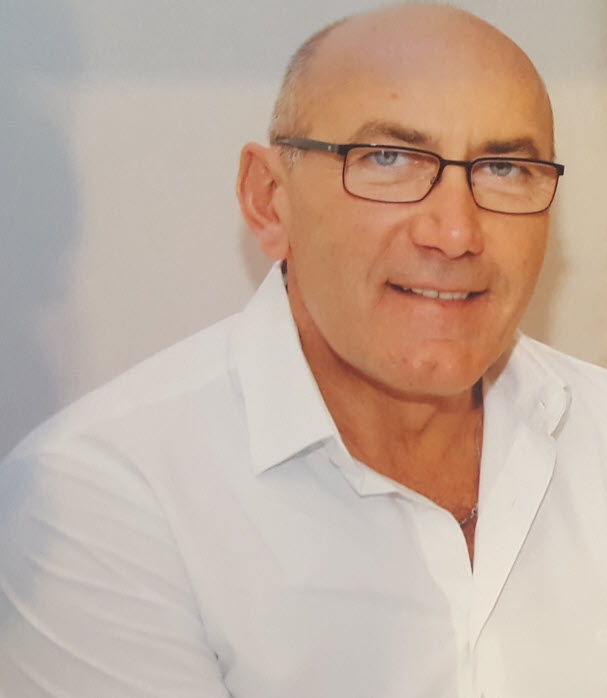

Dorinel Lapadat Management Consultant
Dorinel Lapadat heter jag och är VD för DL Management Consulting AB.
Efter 30 år av anställningstid hos ett antal stora och medelstora bolag i olika chefspositioner och genomförda projekt under åren beslutade jag mig att starta eget Management Consulting bolag med förhoppning att kunna hjälpa fler företag i deras utveckling framöver.
Mina uppdrag har under åren varierat allt från att etablera nya produktionsenheter till leda strukturella genomgripande förändringar såsom flytt av företag utomlands till organisationsutveckling, implementering av 5S, ständiga förbättringar, produktionsoptimering, lagerstyrning, inköpsstrategi och skapa nya fabrikslayouter.
Är en senior och erfaren ledare som jobbat inom flera chefsbefattningar i en mängd olika branscher. Jag vet vad som krävs för att leda och driva verksamheter mot uppsatta mål, har varit med om både uppgång och motgång, att vända röda siffror till svarta, hitta nya affärer, utveckla medarbetare, genomdriva förändringar, hantera kriser och oväntade situationer. Att vara lyhörd, analytisk, flexibel, lösningsorienterad och förmåga att kunna hantera och driva stora förändringar är några viktiga parametrar.
Inget uppdrag är det andra likt och därför ser lösningarna olika ut för varje företag.
Vad behöver ni hjälp med?
Välkomna att höra av er till oss.
